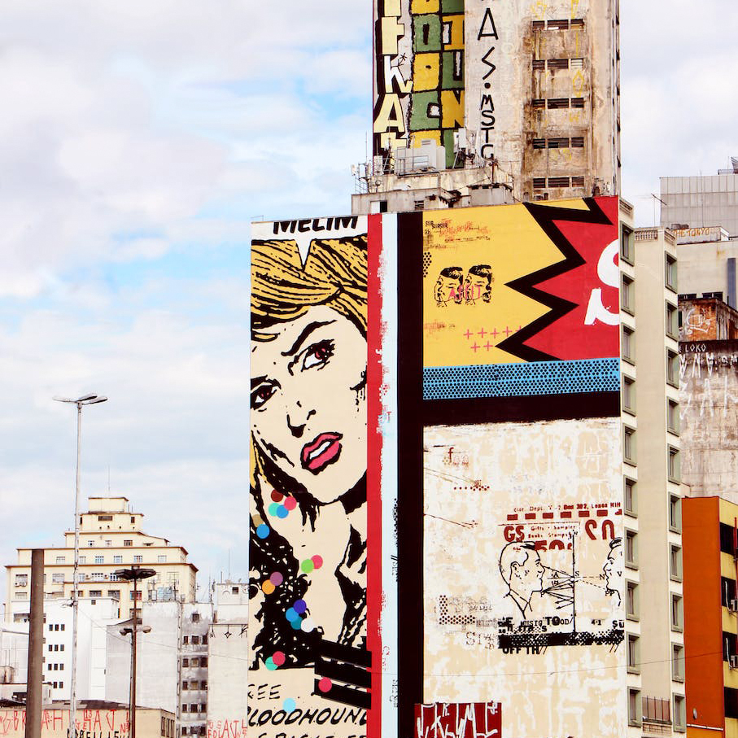
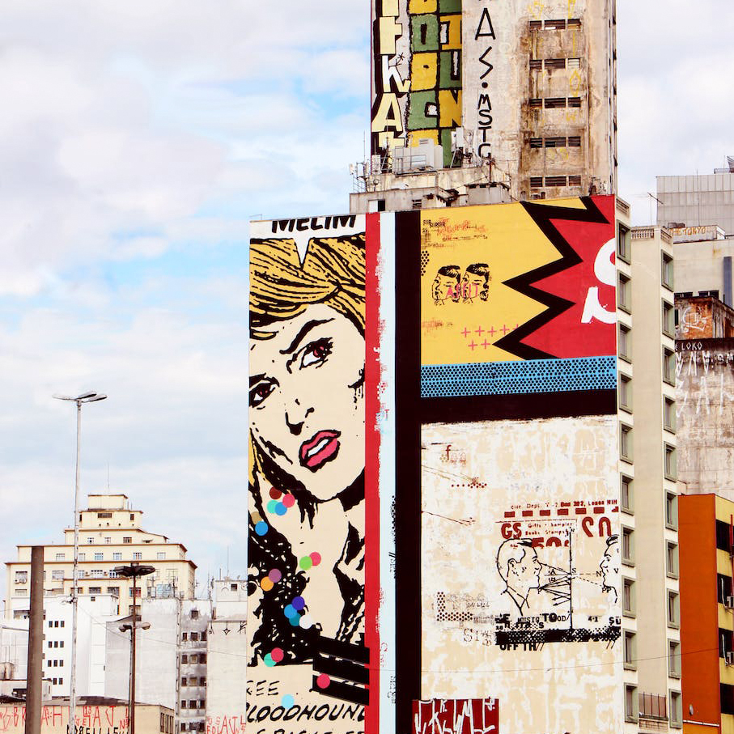

Le 15 octobre 2023, Vevey célèbre les tendances actuelles en matière d'art urbain et de musique, et rassemble une communauté de personnes partageant les mêmes intérêts. Notre événement offre une variété d'activités pour les visiteurs, notamment des démonstrations de skate réalisées par des professionnels, des ateliers de graffiti interactifs, des expositions d'œuvres d'art urbain innovantes et des performances musicales d'artistes locaux et internationaux. Notre objectif est de créer un espace pour que les artistes de rue et les amateurs de culture urbaine puissent se rencontrer, partager leur savoir-faire et leur passion pour l'art urbain et s'immerger dans une ambiance urbaine unique. Notre festival propose également une sélection de stands de restauration proposant une cuisine de rue authentique pour ravir les papilles des visiteurs.
Tags Graffiti Street Art
-
09h00-11h00 :
Sessions libres
-
10h00-12h00 :
Atelier de graffiti interactif avec Dimitri
-
13h30–17h00 :
Démonstration de Manos68 et sessions libres
 


Nous sommes ravis de présenter notre invité d'honneur pour le Street Jam Festival, le célèbre graffeur Dimitri. Originaire de Corbière, Dimitri a commencé à expérimenter avec les bombes aérosols à l'âge de 14 ans et a depuis créé une réputation internationale pour son style unique et expressif. Son travail est influencé par la culture hip-hop, la street culture et l'art urbain contemporain, et est souvent caractérisé par des couleurs vives, des formes organiques et des détails saisissants.
Skate
-
09h00-10h00 :
Inscriptions et accueil des participants
-
10h00-10h30 :
Démo de skateboard par des professionnels
-
10h30-11h30 :
Atelier d'initiation au skateboard pour les débutants
-
09h00-10h00 :
Inscriptions et accueil des participants
-
10h00-10h30 :
Démo de skateboard par des professionnels
-
10h30-11h30 :
Atelier d'initiation au skateboard pour les débutants
-
11h30-12h30 :
Session de skateboard libre pour les participants
-
12h30-13h30 :
Pause
-
13h30-14h00 :
Concours de skateboard "Meilleure figure" pour les participants
-
14h00-15h00 :
Session de skateboard libre pour les participants
-
15h00-15h30 :
Démo de skateboard par des professionnels
-
15h30-16h30 :
Atelier de skateboard "Street Style" pour les skateurs expérimentés
-
16h30-17h00 :
Remise des prix pour le concours "Meilleure figure"
-
17h00 :
Fin de la journée
Veuillez noter que les horaires sont donnés à titre indicatif et peuvent être sujets à des changements. Les participants seront informés des horaires définitifs lors de leur inscription à l'événement.
Musique
-
15h00-17h00 :
Atelier de musique urbaine pour les amateurs de beatmaking et de rap
-
17h00-23h00 :
Concert de hip-hop avec des artistes locaux et nationaux
-
24h00 :
Fin de la journée